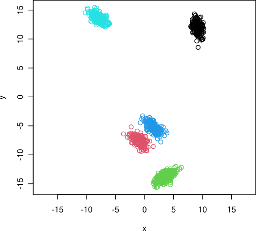

clugenr is an R package for generating multidimensional clusters. Each cluster is supported by a line segment, the position, orientation and length of which guide where the respective points are placed. The clugen() function is provided for this purpose, as well as a number of auxiliary functions, used internally and modularly by clugen(). Users can swap these auxiliary functions by their own customized versions, fine-tuning their cluster generation strategies, or even use them as the basis for their own generation algorithms.
How to install
A stable version of the package is available on CRAN and can be installed with the following instruction:
install.packages("clugenr")Alternatively, install the development version from GitHub with the following command (requires the devtools package):
devtools::install_github("clugen/clugenr")Quick start
library(clugenr)
x <- clugen(2, 5, 1000, c(1, -0.5), 0.5, c(4, 6), 6, 0.2, 0.5)
plot(x$points, col = x$clusters, xlab = "x", ylab = "y", asp = 1)
Further reading
- Theory: clugen algorithm overview
- Detailed usage examples: 2D, 3D (part I, part II), other dimensions
- Function reference
- Developing this package